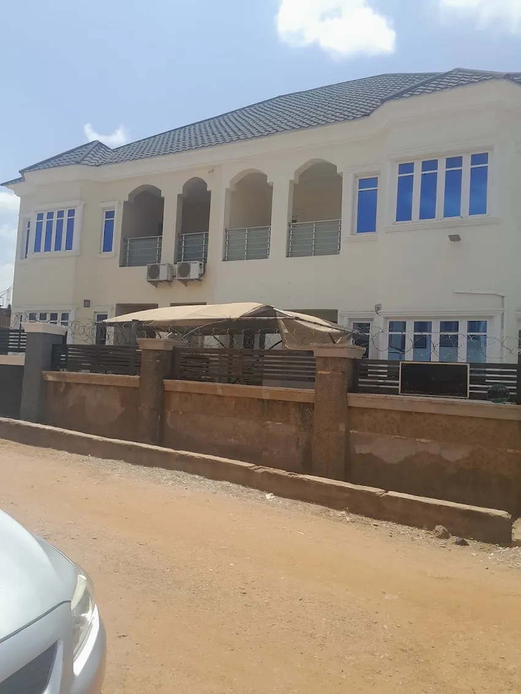

Notary public enquiries
A Google review mentions notary support for documents. Ask about your specific document, requirements, availability and fees.
Ask about notary supportLaw firm Notary Public Wuye, Abuja
Chukwuma Ejerenwa & Associates (Notary Public) is listed at Plot 547 Ameh Ebute St, Wuye. Start with a direct enquiry about your matter or documents, then confirm availability and requirements before visiting.

A direct first step
The public profile identifies the firm as a law firm and notary public. It does not publish a detailed practice-area list, so contact the office to check whether it handles your matter.
A Google review mentions notary support for documents. Ask about your specific document, requirements, availability and fees.
Ask about notary supportThe business description says the founder personally handles cases. Share a brief outline and ask whether the firm can assist.
Discuss a legal matterTell the firm whether you are enquiring for a business, yourself or your family. Confirm the current scope before proceeding.
Choose an enquiry routeFounder-led case handling
The Google business description says the founder personally handles cases. Contact the firm to confirm who would manage your matter, whether it falls within the firm's current scope and what the next step may involve.
Google reviews
The firm has a 4.8★ rating from 27 Google reviews. Here is one supplied review excerpt.
“This service provided outstanding notary support for my documents. Their service is professional, I recommend it highly!”Google review
Wuye, Abuja
The Maps listing gives the location as Wuye, Abuja 900288. Use the business pin for directions and contact the office before travelling to confirm a lawyer can meet you.
Wuye, Abuja
Start with a brief description. Ask the firm to confirm scope, availability, fees and a suitable appointment time.